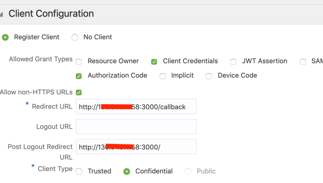
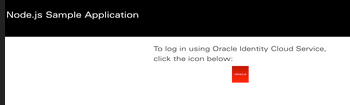

<div class="initial-content">
  <div id="main" role="main">

  <article class="page has-sidebar" itemscope itemtype="https://schema.org/CreativeWork">
    <meta itemprop="headline" content="Deploying a Custom Nodejs Web Application Integrated with Identity Cloud Service for Unique Single Sign On UX">
    
    <meta itemprop="datePublished" content="2022-03-10T08:42:00+00:00">
    


    <header>
      <h1 id="page-title" class="page__title" itemprop="headline">Deploying a Custom Nodejs Web Application Integrated with Identity Cloud Service for Unique Single Sign On UX
</h1>
      


    </header>

    <section class="page__content" itemprop="text">
      

        <p>In this post we are deploying a custom Node.js web application in the Oracle Kubernetes Engine (OKE).</p>

<p>We want to show how to configure the custom web application so we have a unique Single Sign On user experience.</p>

<h2 id="first-part">First part</h2>

<p>Follow this tutorial <a href="https://www.oracle.com/webfolder/technetwork/tutorials/obe/cloud/idcs/idcs_nodejs_sdk_obe/idcs-nodejs-sdk.html">here</a> explaining how to enable SSO in the web app running locally.</p>

<h2 id="second-part">Second part</h2>

<p>Next we make some small changes to deploy on Kubernetes.</p>

<p>Create a Dockerfile in the nodejs folder of the cloned project with the following:</p>

<div class="language-console highlighter-rouge"><div class="highlight"><pre class="highlight"><code><span class="go">FROM oraclelinux:7-slim
WORKDIR /app
ADD . /app
RUN curl --silent --location https://rpm.nodesource.com/setup_11.x | bash -
RUN yum -y install nodejs npm --skip-broken
EXPOSE 3000
CMD ["npm","start"]
</span></code></pre></div></div>

<p>Create a K8s deployment file as follows:</p>

<div class="language-yaml highlighter-rouge"><div class="highlight"><pre class="highlight"><code><span class="na">apiVersion</span><span class="pi">:</span> <span class="s">v1</span>
<span class="na">kind</span><span class="pi">:</span> <span class="s">Service</span>
<span class="na">metadata</span><span class="pi">:</span>
<span class="na">name</span><span class="pi">:</span> <span class="s">idcsnodeapp</span>
<span class="na">spec</span><span class="pi">:</span>
<span class="na">type</span><span class="pi">:</span> <span class="s">LoadBalancer</span>
<span class="na">selector</span><span class="pi">:</span>
<span class="na">app</span><span class="pi">:</span> <span class="s">idcsnodeapp</span>
<span class="na">ports</span><span class="pi">:</span>
<span class="pi">-</span> <span class="na">name</span><span class="pi">:</span> <span class="s">client</span>
<span class="na">protocol</span><span class="pi">:</span> <span class="s">TCP</span>
<span class="na">port</span><span class="pi">:</span> <span class="m">3000</span>
</code></pre></div></div>

<p>Deploy to k8s:</p>

<div class="language-console highlighter-rouge"><div class="highlight"><pre class="highlight"><code><span class="go">kubectl apply -f service.yaml
</span></code></pre></div></div>

<p>Grab the url of the new external load-balancer service created in K8s and modify the file <code class="language-plaintext highlighter-rouge">auth.js</code> with the appropriate values in your cloud environment:</p>

<div class="language-console highlighter-rouge"><div class="highlight"><pre class="highlight"><code><span class="go">var ids = {
oracle: {
"ClientId": "**client id of the IdCS app**",
"ClientSecret": "**client secret of the IdCS app**",
"ClientTenant": "**tenant id (idcs-xxxxxxxxxxxx)**",
"IDCSHost": "https://**tenantid**.identity.oraclecloud.com",
"AudienceServiceUrl" : "https://**tenantid**.identity.oraclecloud.com",
"TokenIssuer": "https://identity.oraclecloud.com/",
"scope": "urn:opc:idm:t.user.me openid",
"logoutSufix": "/oauth2/v1/userlogout",
"redirectURL": "http://**k8sloadbalancerip**:3000/callback",
"LogLevel":"warn",
"ConsoleLog":"True"
}
</span><span class="gp">};</span><span class="w">
</span></code></pre></div></div>

<p>Build the container and push to a repo you have write access to, such as:</p>

<div class="language-console highlighter-rouge"><div class="highlight"><pre class="highlight"><code><span class="go">docker build -t javiermugueta/idcsnodeapp .
docker push javiermugueta/idcsnodeapp
</span></code></pre></div></div>

<p>Modify the IdCS application with the public IP of the k8s load-balancer service:</p>

<picture class="">
                <source srcset="assets/okenodejavierimagaidcssso.png 1x" />
                
            </picture>

<p>Create a k8s deployment file as follows:</p>

<div class="language-yaml highlighter-rouge"><div class="highlight"><pre class="highlight"><code><span class="na">apiVersion</span><span class="pi">:</span> <span class="s">apps/v1</span>
<span class="na">kind</span><span class="pi">:</span> <span class="s">Deployment</span>
<span class="na">metadata</span><span class="pi">:</span>
<span class="na">name</span><span class="pi">:</span> <span class="s">idcsnodeapp</span>
<span class="na">labels</span><span class="pi">:</span>
<span class="na">app</span><span class="pi">:</span> <span class="s">idcsnodeapp</span>
<span class="na">spec</span><span class="pi">:</span>
<span class="na">replicas</span><span class="pi">:</span> <span class="m">1</span>
<span class="na">selector</span><span class="pi">:</span>
<span class="na">matchLabels</span><span class="pi">:</span>
<span class="na">app</span><span class="pi">:</span> <span class="s">idcsnodeapp</span>
<span class="na">strategy</span><span class="pi">:</span>
<span class="na">type</span><span class="pi">:</span> <span class="s">Recreate</span>
<span class="na">template</span><span class="pi">:</span>
<span class="na">metadata</span><span class="pi">:</span>
<span class="na">labels</span><span class="pi">:</span>
<span class="na">app</span><span class="pi">:</span> <span class="s">idcsnodeapp</span>
<span class="na">spec</span><span class="pi">:</span>
<span class="na">containers</span><span class="pi">:</span>
<span class="pi">-</span> <span class="na">image</span><span class="pi">:</span> <span class="s">javiermugueta/idcsnodeapp</span>
<span class="na">name</span><span class="pi">:</span> <span class="s">idcsnodeapp</span>
<span class="na">ports</span><span class="pi">:</span>
<span class="pi">-</span> <span class="na">containerPort</span><span class="pi">:</span> <span class="m">3000</span>
<span class="na">name</span><span class="pi">:</span> <span class="s">idcsnodeapp</span>
</code></pre></div></div>

<p>Deploy to K8s:</p>

<div class="language-console highlighter-rouge"><div class="highlight"><pre class="highlight"><code><span class="go">kubectl apply -f  deployment.yaml
</span></code></pre></div></div>

<p>Test the app and verify SSO is working:</p>

<picture class="">
                <source srcset="assets/okejavierslideshowpartidcssso1.png 1x" />
                
            </picture>

<p>Hope this helps! 🙂</p>


          <div class="sidebar sticky">
    <!-- <p><strong>Tags:</strong> <span class="tags">

            
            <a class="animated-link tag" href="/topics/open-source">open-source</a>
            <a class="animated-link tag" href="/topics/oci">oci</a>
            <a class="animated-link tag" href="/topics/always-free">always-free</a>
            <a class="animated-link tag" href="/topics/nodejs">nodejs</a>
            <a class="animated-link tag" href="/topics/javascript">javascript</a>
            </span>
    </p> -->
  


<div itemscope itemtype="https://schema.org/Person">

  

  <div class="author__content">
    
      <a href="https:/javiermugueta.blog/author/javiermugueta/"><h3 class="author__name" itemprop="name">Javier Mugueta</h3></a>
    
    
  </div>

  <div class="author__urls-wrapper">
    <ul class="author__urls social-icons">
      

      

      

      

      

      

      

      

      

      

      

      

      

      

      

      

      

      

      

      

      

      

      

      

      

      

      
    </ul>
  </div>
</div>

  
  
  

  </div>


      </section>

      <footer class="page__meta">
        
        


        

  <p class="page__date"><strong><i class="fas fa-fw fa-calendar-alt" aria-hidden="true"></i> Updated:</strong> <time datetime="2022-03-10T08:42:00+00:00">March 10, 2022</time></p>


      </footer>
    </div>

  </article>
</div>

</div>

